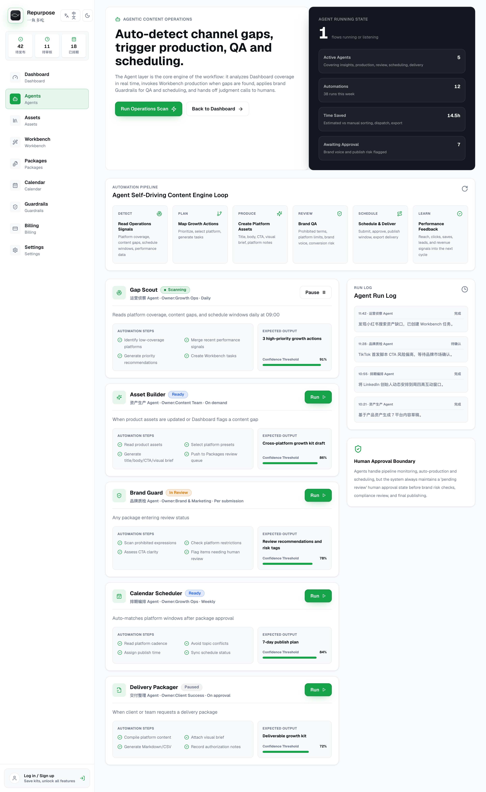
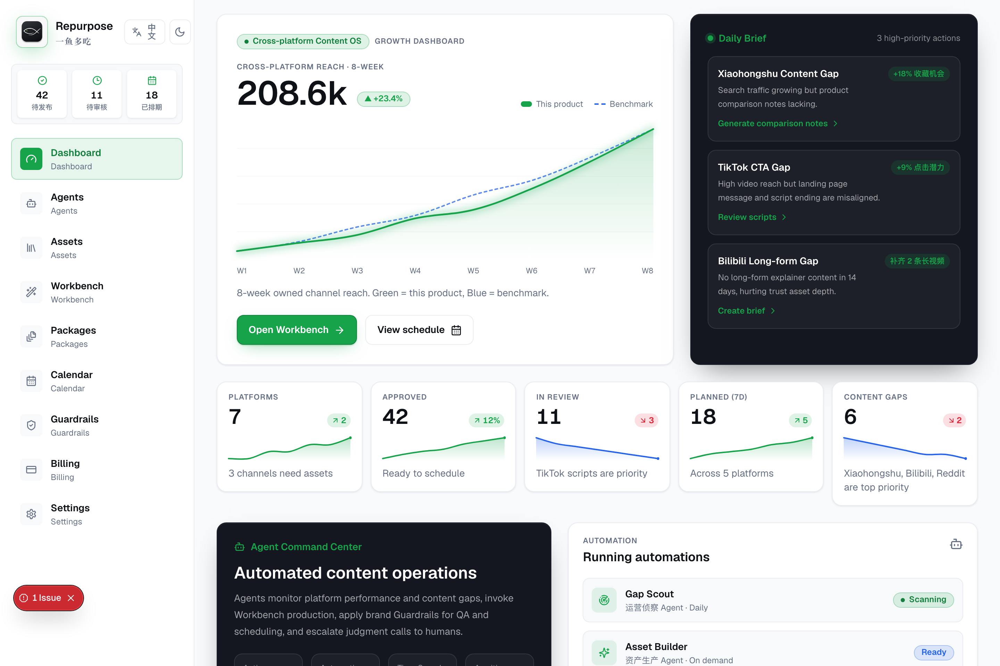
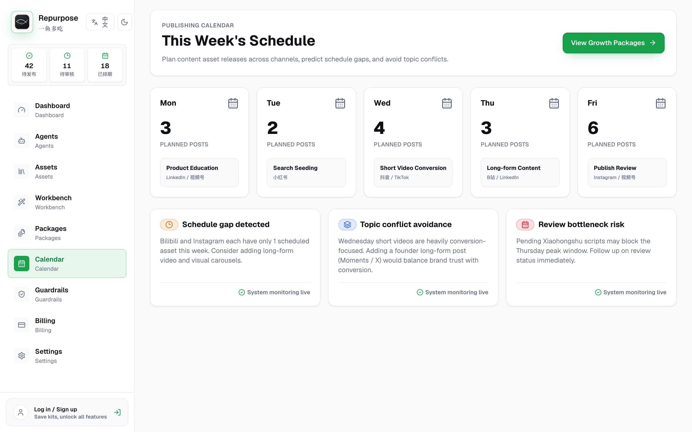
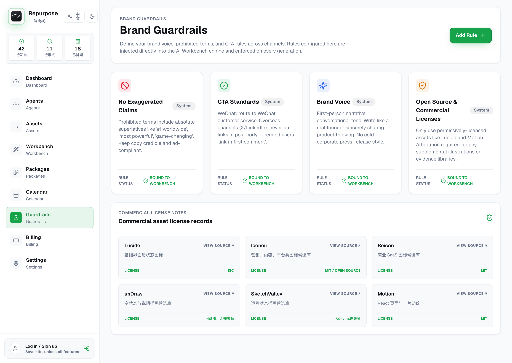
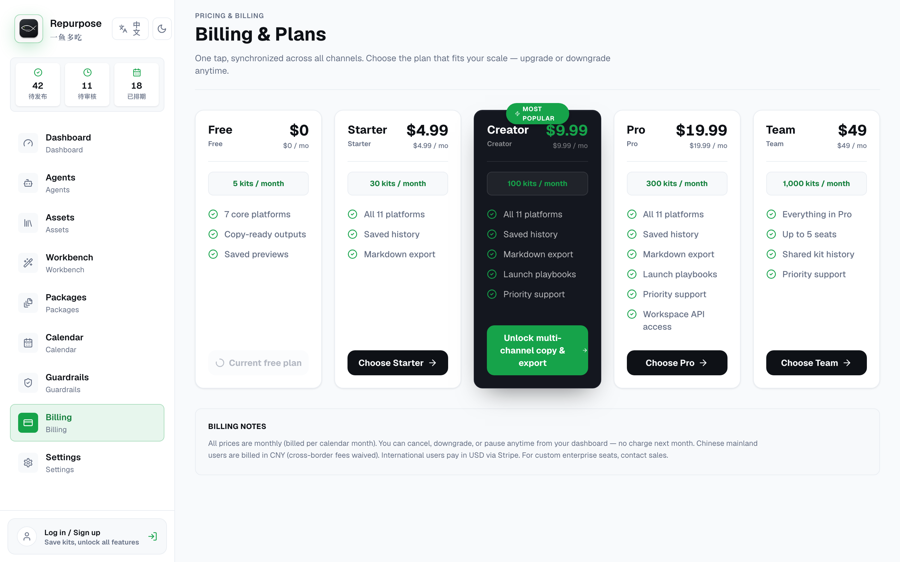

我第一次把「一鱼多吃」的结果页跑通时，屏幕上整整齐齐排着 11 份内容：LinkedIn 帖子、X thread、小红书图文、视频脚本、Newsletter……作为 Demo，它看上去已经能卖了。
我没急着高兴。因为我心里清楚，这 11 份里有几份，根本不是 AI 生成的。早期版本有个“聪明”的处理：模型一报错，它就悄悄塞一份模板进去，把空位补满。用户看到的是漂漂亮亮的 11 份，只有我知道，其中有几张是糊弄人的布景。
这事儿让我别扭了好几天。后来我想明白了：这个产品真正坑人的地方，是把一份普通模板，包装成“AI 成功生成”的结果。用户一旦信了，拿着错的内容去发，砸的是他自己经营了好几年的号。
多平台生成不是“写十一遍”。它是把同一个事实，放进十一种不同的阅读场景，并让用户看得见每次转换的依据。
我亲手删掉的第一个功能，叫“永远成功”
静默兜底这东西，是个特别诱人的陷阱。Demo 永远不会断，看的人连连点头，你自己也舒坦。可它有个要命的死穴：用户分不清自己手里的，到底是模型真生成的、缓存里捞的，还是后台偷偷塞的模板。一份带着错事实的文案被发出去，赔进去的可是人家经营了三年的账号信誉，区区一次生成额度根本填不起这个窟窿。
我纠结了两天，最后还是把它删了。
Decision 01 · 删掉静默假数据
- 约束
- 模型会超时、会返回格式错误，开发环境还可能压根没配密钥。
- 备选
- 继续模板兜底；全页报错；保留已成功的，只把失败的标出来。
- 选择
- 第三种。成功的接着能编辑，失败的卡片直接写明原因，给个重试按钮。
- 代价
- Demo 再也不“完美”了，错误状态和恢复路径得单独设计一套。
- 收益
- 用户终于知道哪些能信，我也第一次拿到了真实的失败数据。

这里有个很多人没想明白的产品常识：错误提示，别把它当成工程异常的创可贴——它是用户决策的一部分。一句干巴巴的“生成失败”，等于啥也没说。换成“小红书这条图片描述超了限制，其他 10 条都给你留着呢，要不要单独重试这一条？”，用户才知道下一步该干嘛。
我为什么亲手砍掉了那个万能聊天框
最早的版本，我也上了聊天框：左边对话，右边出结果。输入“把这篇稿子改成 11 个平台”，等它吐答案。这结构顺手得要命——因为所有 AI 产品都这么干，用户也熟，照着抄最省事。
可我一拿真实运营场景去压，它立马露馅。
真干活的人，根本不是这么干活的。他会锁死一条确认过的数据，只重写标题；他会同时对比两个 X 的开头，还得瞄一眼小红书有没有违禁词；他会把某个平台拖到下周再发。聊天记录能存下你俩的对话，可它死活表达不了 11 个对象各自是什么版本、什么状态、谁依赖谁。用聊天框管这些，就像用记事本去管一个项目——能凑合，但迟早乱套。
Decision 02 · 从对话框改成空间工作台
- 约束
- 同一份来源，要变出多个能独立编辑、锁定、重试、排期的结果。
- 备选
- 一条长回答；标签页切换；三栏工作台。
- 选择
- 第三种。左边定意图，中间存上下文，右边出结果。借的是 IDE 那种空间上的稳，扔掉聊天那种时间上的流水。
- 代价
- 首屏信息更密，层级和响应式得重新磨。
- 验证
- 用户不用滚回历史消息，就能答上来“这条结果用了哪些资料、现在到底能不能发”。


Guardrail，得在生成之前就拦在门口
这个坑我也踩过：最早把品牌检查放在最后。11 份内容全生成完，系统才慢悠悠弹一句“语气可能不一致”。你说它说得对吗？对。有用吗？一点用没有。用户已经编辑了大半天了，你这时候才告诉他整段不能发？
后来我把它整个挪到了生成之前。护栏里存着不许用的承诺、必须出现的产品名、一个字都不能改的数据、语气边界和 CTA。生成的时候，这些规则先进上下文；生成完，再回头查一遍。这东西更像一份能被执行的机构记忆，比一份躺在云盘里落灰的品牌手册强多了。

四秒钟的等待，不能只剩一个转圈
11 个平台同时生成，不可能秒出。早期版本就是在按钮上转个圈，四秒钟，用户眼里能拉长成十几秒。后来我让每张卡片各自亮起状态：读资料、套规则、生成、检查——完成一张就先冒出来一张。总耗时没省多少，但等待从一个黑箱，变成了一场你能看见的过程。
我没敢把这写成“感知速度提升 40%”——因为压根没做能支撑这个百分比的实验。我能拍胸脯确认的就两点：用户看得见系统卡在哪了，也能先去处理那些已经好的。前者让人不慌，后者让人不干等。
计费页，逼着我回答一个最怕的问题
做到定价页，我被卡住了。一个产品要是只按“每月生成多少条”收钱，迟早被拖进一场 token 转售的价格战——谁家模型便宜谁赢，你辛辛苦苦做的产品，护城河约等于零。
真正难被抄走的，是另一摊东西：能复用的品牌规则、攒下来的历史上下文、跨渠道的状态管理、一套发布节奏。所以定价不能光卖数量，得对上你真正提供的那种工作方式。

说句实话，我到现在也没有足够的真实付费数据，能证明这套套餐就是对的。这是当下最让我心里没底的事。我觉得下一步不该再堆功能了——该老老实实回去盯一件事：创作者掏钱，到底图什么？为省时间，为少出错，还是为品牌始终一个味儿。
到最后，这套产品反过来教我怎么做内容
有意思的是，做完这产品，我对自己“怎么发内容”这件事，也算彻底想通了。母体就放个人网站：完整论证、图片、来源，都搁这儿。LinkedIn 提炼职业判断，X 记录干活的短结论，小红书把一个机制拆成图来讲，视频号用大白话讲一个具体场景。它们共用一套事实，但谁也不抄谁的句子。
就拿这篇文章来说——到了小红书，我不会把它缩成“AI 内容工具的 5 个原则”。我只讲一件事：为什么我删掉了一个能让 Demo 永远成功的功能。到 X，就是一句判断，配四张失败状态的图。到 LinkedIn，聊的是 AI 产品为什么非得把不确定性摆到台面上。网站负责把话讲透，平台负责把人领进门。
做 AI 产品之前，拿这五条先拷问自己一遍
- 失败的时候，你的产品有没有偷偷塞一个看起来成功的东西给用户？
- 每条重要内容，能不能往前追到来源和规则？
- 你的护栏，是生成前就拦在门口，还是发布前才补一句没用的警告？
- 用户等待的时候，屏幕上是真实的进度，还是干巴巴一个转圈？
- 你卖的是 token 数，还是一种让人离不开的工作方式？
- 「一鱼多吃」完整产品案例：工作台、代理、Guardrail、日历与计费画面。
- 本文关于等待和质量的判断来自当前产品实现与自我复盘，不冒充规模化用户研究结果。